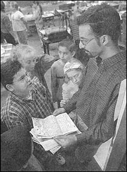

|
|
||||||||||||||||||||||||||||
| . | ||||||||||||||||||||||||||||
|
Volunteer Force the Brainchild of U-M
Grad |
||||||||||||||||||||||||||||
|
Monday, December 23, 2002 BY CHONG W. PYEN
|
||||||||||||||||||||||||||||
| On
a recent sunny morning, Rishi Moudgil walked into Peter Larson's fifth-grade
classroom at Carpenter Elementary School in Pittsfield Township and blended
right in with the students working on a class project.
Moudgil, 24, a 2000 University of Michigan graduate, is a fixture in local classrooms, pairing U-M students and elementary school students as pen pals and buddies, visiting schools and organizing a massive campus volunteer force whose members work as mentors and tutors. Last month, Moudgil, founder and president of K-grams (a shortened form of Kids Programs), received the Blue Cross Blue Shield of Michigan's Grand Angel Award for volunteer work that benefits children. He won the $5,000 top award from among 88 nominations. "I never expected to be honored this way," he said. "This donation will help support our plans to continue and to expand our program. My dream is to expand K-grams and have chapters at colleges and universities throughout the U.S." Currently, 2,000 U-M volunteers, mostly from residence halls, work with 1,300 elementary students in 55 classrooms at 10 elementary schools in Ann Arbor, Ypsilanti and Detroit. Every other week, paired college students and elementary pupils exchange letters, trading introductions and pleasantries and seeking and offering
Moudgil launched K-grams in the summer of 1998, while he was serving as president of Circle K, a community service club. Moudgil, then a junior in business school, thought an on-going relationship between university students and school children could benefit both groups. Pete Larson, a fifth-grade teacher at Carpenter, likes the program because his students learn to write for a specific reader and purpose. "It gives the kids an opportunity to have an audience for their writing, not as a class assignment," Larson said. "It kind of gives the kids here an idea what college is like," he added. "Letters written back and forth, talking about exams, classes, different things. Kids really like the interaction when their pen pals come to visit the classroom." Tamico Taliaferro, 10, has had U-M pen pals for four years. "I like it because I was writing to somebody," said the Carpenter fifth-grader. "We say what we like. I like basketball. We describe what we look like," she said, adding that she is looking forward to meeting her current pen pal. Another fifth-grader, Ionatan Mazza, 10, found he and his correspondent have a common interest - the Red Wings. "We write back and forth," he said. "Sometimes I ask him if the Red Wings won if I didn't watch the game. He writes about college life. It's tiring, but he enjoys it. I can write anything I want to." Recruiting and training volunteers to become pen pals is a year-round process, Moudgil said. "We target mostly freshmen and second-year students," he said. "A lot of students don't normally do community work. They join K-grams because it's simple." He said the pairing of 8-year-olds and 18-year-old college students is ideal because the kids feel connected to the adults as mentors and at the same time as friends. The program has a $35,000 budget, mostly U-M allocations from Student Government and U-M Housing funds. "I am very passionate about kids while engaging people of my generation," Moudgil said. "It's very rewarding to me. No matter how much effort you put in, it's going to benefit kids." |
||||||||||||||||||||||||||||